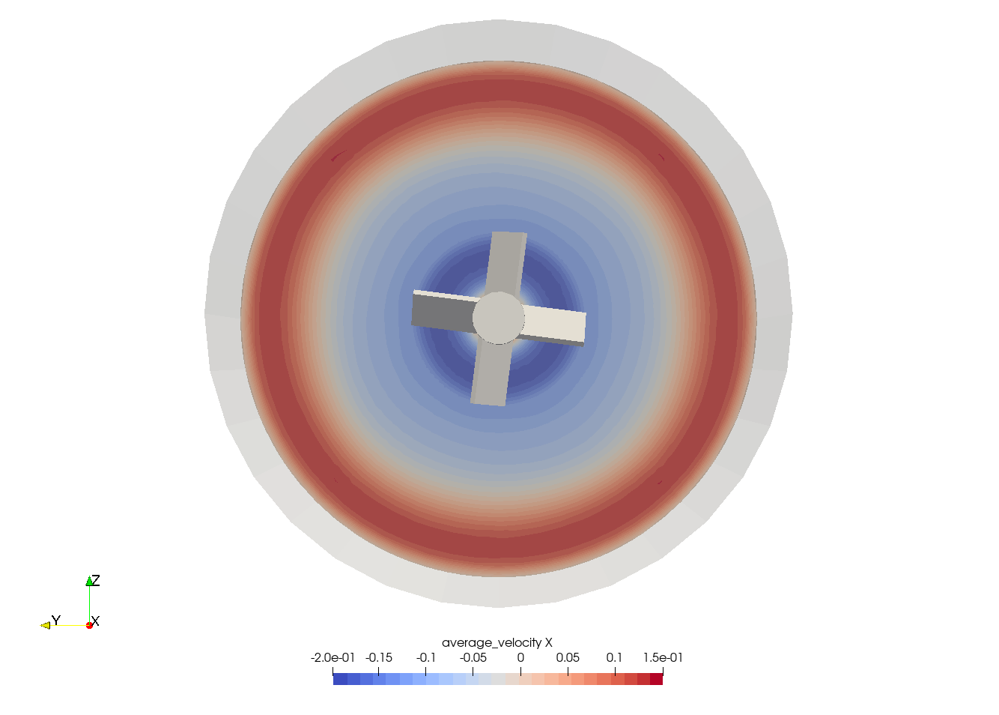

Mixer with Pitched-Blade Turbine Impeller Using Nitsche Immersed Boundary#
Simulation of mixing in stirred-tanks is one important industrial application which is often simulated with Lethe. Agitated vessels are widely applied in chemical engineering as product homogenizers, heat and mass transfer enhancers, and surface area maximizers in solid-fluid processes. Batch and Continuous Stirred Tank Reactors (CSTR), for example, are among the most common reactor models applied in chemical industries that can be simulated through computational fluid dynamics.
This example illustrates how the transient flow in a stirred-tank can be simulated by Lethe using the Nitsche Immersed Boundary (NIB) formulation.
See also
This example is related to the article A parallel and adaptative Nitsche immersed boundary method to simulate viscous mixing by Joachim et al. [1]
Features#
Solvers:
lethe-fluid-nitscheTransient problem
Rotating complex solid modeled with Nitsche immersed boundary
Calculation of the average velocity
Files Used in this Example#
All files mentioned below are located in the example’s folder (examples/incompressible-flow/3d-nitsche-mixer-with-pbt-impeller).
Geometry file:
pbt.geoMesh file:
pbt.mshParameter file:
mixer.prm
Description of the Case#
We simulate the flow generated by a pitched blade turbine (PBT) in a stirred tank. The PBT is an axial impeller, which generates a flow pattern that amplifies axial circulation within the vessel (in opposition to radial impellers, e.g. Rushton turbines) [2].
The setup that we wish to simulate is schematized in the following figure:

The dimensions are listed in the following table:
Symbol |
Description |
Value |
|---|---|---|
\(D_\text{t}\) |
Tank diameter |
\(1\) m |
\(H\) |
Height of the fluid domain |
\(D_\text{t}\) |
\(C_\text{i}\) |
PBT off-bottom clearance |
\(D_\text{t}/4\) |
\(D_\text{i}\) |
PBT diameter |
\(D_\text{t}/3\) |
\(W_\text{i}\) |
PBT blade width |
\(D_\text{i}/5\) |
\(T_\text{i}\) |
PBT blade thickness |
\(W_\text{i}/10\) |
\(\theta\) |
Tilt angle of the blades |
\(45^\circ\) |
\(D_\text{s}\) |
Shaft diameter |
\(W_\text{i}\times \cos(\theta)\) |
\(D_\text{h}\) |
Hub diameter |
\(1.4 \times D_\text{s}\) |
\(H_\text{h}\) |
Hub height |
\(W_\text{i} \times \sin(\theta)\) |
See also
The .geo file used to generate the mesh is available in the example folder, or in lethe-utils repository.
The boundary conditions on the tank are:
noslipon the hull and bottom wall, andslipon the upper wall to mimic the liquid’s free surface.
Note
The use of a slip boundary condition is debatable. A none (do-nothing) boundary condition could also be used since free surfaces have constant pressure, but the slip boundary condition is generally significantly more numerically robust.
For this configuration, the Reynolds number is defined as:
where \(N\) is the angular velocity in Hertz (or Rotation Per Second, RPS), here constant (\(N = 1~\text{Hz}\)), and \(\nu\) is the kinematic viscosity in \(\text{m}^2/\text{s}\).
We investigate this case at a Reynolds number \(Re=300\). This example can easily be extended to higher Reynolds number values by lowering the kinematic viscosity. It would then be necessary to increase the mesh resolution for the solution to be meaningfully accurate.
Parameter File#
Except for the Nitsche immersed boundary, all other sections of the parameter file in the present case have been explained in previous examples. However, the important sections are briefly explained for completeness.
Simulation Control#
The Simulation Control subsection defines the time integration and output results:
subsection simulation control
set method = bdf2
set output name = mixer
set output path = ./output/
set output frequency = 2
set time end = 5
set time step = 0.02
set output boundaries = true
end
Since the flow generated by the agitator is naturally transient, we simulate:
a total of
time end = 5seconds,with a
time step = 0.02second,using a second-order
bdf2time-stepping method.
Results are outputted:
at every
output frequency = 2iterations, andwe set
output boundaries = trueto generate an auxiliary.vtufile that highlights the tank walls by hiding the cells of the mesh. This allows for a clearer visualization of the mixing setup.
Physical Properties#
The Physical Properties subsection defines our fluid:
subsection physical properties
subsection fluid 0
set kinematic viscosity = 0.001
end
end
The kinematic viscosity is set to \(0.001\). This, combined with the angular velocity of \(1~\text{Hz}\) and the diameter of the impeller of \(0.3~\text{m}\), will allow us to simulate the vessel at \(Re=300\).
Mesh#
The Mesh subsection specifies the computational grid:
subsection mesh
set type = dealii
set grid type = subdivided_cylinder
set grid arguments = 2:0.5:0.5
set initial refinement = 3
end
Thanks to our immersed boundary approach, we only need to mesh the vessel without considering the impeller. This greatly simplifies the meshing process, so that the mesh can be generated straightforwardly using the deal.II mesh generator for a subdivided cylinder, where:
the half-height is \(= 0.5\), and
the radius of the vessel is \(= 0.5\).
This will generate a vessel in which the axis of the impeller will be along the \(x\) coordinate. The bottom of the vessel will be on the \(x=-0.5\) plane.
See also
For detailed explanation of the mesh generators, see the deal.II GridGenerator.
Boundary Conditions#
The Boundary Conditions - CFD subsection establishes the constraints on different parts of the domain:
subsection boundary conditions
set number = 3
subsection bc 0
set id = 0
set type = noslip
end
subsection bc 1
set id = 1
set type = noslip
end
subsection bc 2
set id = 2
set type = slip
end
end
Three boundary conditions are considered:
on the hull (
id=0, lateral walls):noslip,on the bottom wall (
id=1):noslip, andon the upper wall (
id=2):slip.
See also
The boundary conditions are described in the Boundary Conditions - CFD section of the documentation.
Nitsche Immersed Boundary Parameters#
The Nitsche Immersed Boundary subsection is used to insert the immersed geometry and control its motion.
subsection nitsche
set number of solids = 1
subsection nitsche solid 0
subsection mesh
set type = gmsh
set file name = pbt.msh
set simplex = true
end
subsection solid velocity
set Function expression = 0 ; 1*2*pi*z ; -1*2*pi*y
end
set calculate torque on solid = true
set enable particles motion = true
set particles sub iterations = 10
end
end
subsection mesh: controls the mesh used for the Nitsche immersed boundary, working as a regular Mesh subsection.type = gmsh: we import a mesh file (.msh) of the PBT that is in the same folder as the.prm, with the specifiedfile namesimplex = true: mandatory as the mesh is built with simplices (tetrahedra), to better account for the PBT geometry
subsection solid velocity: specify the velocity as a rotation around the \(x\) axis of the meshes, centered at \((0,0,0)\).Warning
The
solid velocityspecified in the.prmmust be consistent with the axes of the GMSH mesh.enable particles motion = true: mandatory as the solid is moving inside the fluid.particles sub iterations = 10: ensures that particles are always located efficiently as they move through the cell.calculate torque on solid = true: computes torque calculation on the PBT and saves it in the filetorque_solid_00.dat.
Post-processing#
It is often desirable to obtain the time-averaged velocity field when simulating a transient flow. This is achieved through the Post-processing section. The averaging period is started after the flows start to stabilize and reach their pseudo steady-state. In this case, we assume it happens after \(2~\text{sec}\). This choice is prone to error, which can be mitigated by increasing the duration of simulations and using a longer averaging interval.
subsection post-processing
set calculate average velocities = true
set initial time for average velocity = 2
end
Mesh Adaptation#
We use Mesh Adaptation on the fluid velocity, so that cells are refined where the fluid velocity changes the most.
subsection mesh adaptation
set type = kelly
set variable = velocity
set fraction type = fraction
set max number elements = 1200000
set max refinement level = 5
set min refinement level = 3
set frequency = 5
set fraction refinement = 0.2
end
Here, we refine:
at each
frequency = 5iterations,on a
fraction refinement = 0.2(\(20\%\) of the cells),with
max number elements = 1200000to limit the computational cost.
The min refinement level and max refinement level are chosen in consideration of the initial refinement = 3 of the fluid mesh: the cells cannot be coarsened (as min refinement level = initial refinement), and can be refined up to two times.
Non-linear Solver#
Since this is a transient problem, it is not highly non-linear except for the first few iterations. Thus, we use standard Non-linear Solver parameters.
subsection non-linear solver
subsection fluid dynamics
set tolerance = 1e-4
set solver = inexact_newton
end
end
Because the assembly of the Nitsche restriction for the immersed boundary is relatively expensive, we reuse the Jacobian matrix as much as possible. This is accomplished by setting solver = inexact_newton.
Linear Solver#
Relatively standard parameters are used for the Linear Solver. From our experience, the amg preconditioner is more robust with the Nitsche immersed boundaries than the traditional ILU.
subsection linear solver
subsection fluid dynamics
set method = gmres
set max iters = 200
set minimum residual = 1e-7
set preconditioner = amg
set amg preconditioner ilu absolute tolerance = 1e-8
set amg preconditioner ilu relative tolerance = 2.00
set amg aggregation threshold = 1e-10
set max krylov vectors = 200
end
end
Running the Simulation#
Launching the simulation is as simple as specifying the executable name and the parameter file. For this more complex example, it is highly advised to use mpirun to parallelize the computation, with <np> the number of processes, defined accordingly with your machine’s number of cpu. Assuming that the lethe-fluid-nitsche executable is within your path, the simulation can be launched by typing, in a terminal opened in the example folder:
Lethe generates a larger number of files when the Nitsche immersed boundary is used:
the
mixer.pvdcontains the 3D visualization of the velocity, pressure, and auxiliary variables such as the average velocity ;the
mixer_solid_triangulation_00.pvd, corresponding to the Nitsche IB mesh ;the
mixer_solid_particles_00.pvd, corresponding to the discrete particles inserted at the Gauss points of the solid triangulation.
Tip
The solid particles enable the Nitsche restriction visualization, while the solid triangulation is used for animation purposes.
Results and Discussion#
The following movie shows the evolution of the velocity magnitude as a function of time in a cut perpendicular to the radius of the vessel with and without the mesh :
Whereas the next one show the evolution of the axial velocity pattern in the same cut:
Finally, the following animation illustrates the axial velocity pattern in an axial cut of the vessel:
From these animations, we can see that the impeller generates an axial pumping flow. The fluid is diagonally propelled from the blade to the lateral walls and rises along the outer periphery of the vessel before circulating down along the shaft.
Although the transient flow patterns are clear, looking at the time-averaged velocity field is also relevant. The following figures show the time-averaged axial velocity in the axial plane:

Clearly, the fluid is descending along the shaft and rises along the lateral walls of the vessel. Multiple analyses can be done with this type of simulation. For example, one can monitor the torque on the impeller as a function of the Reynolds number to generate the power curve of the agitator. One could also leverage the tracer multiphysics module to measure the mixing time of the tank and/or identify the presence of dead zones.
Possibilities for Extension#
Increase the Reynolds number: Using a finer grid, this example can be launched at even higher Reynolds numbers. In the latter case, the flow is significantly more unsteady.
Calculate the mixing time using the passive tracer physics: Using the passive tracer physics and the built-in post-processing tool, the mixing time in the vessel can be easily calculated.